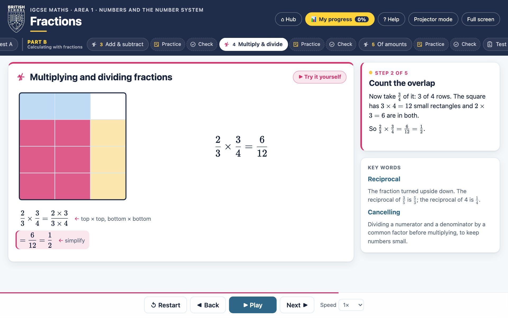

▶
Animated worked examples
Every method is built up line by line, at your speed. Press Next to go step by step, or Play to watch it like a video. Fraction bars, area models, number lines and graphs move to show why the method works, not just what to write.
- Clear narration beside every step
- Key words explained as you go
- Projector mode for the classroom
